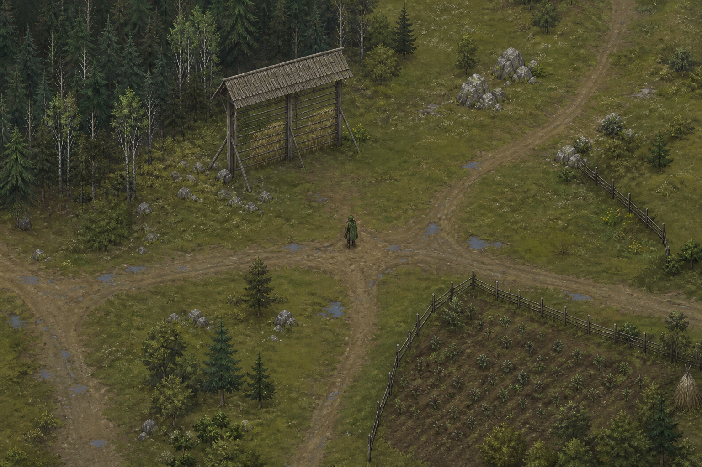

Namig: v gorah poslušaj kamen. Škrati pravijo, da votla skala skriva pot.
Pet zgodb pod senco Triglava
Kronike doline Jelše
Dolina je večja, kot si jo pomnil.
Dolina ti ponudi še eno jutro.

Pot na sever vodi v gozd. Na vzhodu se dimi iz vasi.